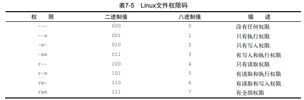

文件权限
权限符号
[root@server-test-211 kz]# ls -l
total 116
-rw-r--r--. 1 root root 0 May 15 16:13 admin.html
-rw-r--r--. 1 root root 48 May 16 11:47 index.html
-rw-r--r--. 1 root root 104658 May 20 09:54 installed_software.txt
-rwxr--r--. 1 root root 33 May 22 11:28 shell.sh
drwxr-xr-x. 2 root root 56 May 16 14:00 test
-rw-r--r--. 1 root root 2212 May 15 17:37 test.html
drwxr-xr-x. 2 root root 23 May 17 09:30 user
| 符号 | 描述 |
|---|---|
| - | 代表文件 |
| d | 代表目录 |
| 1 | 代表链接 |
| c | 代表字符型设备 |
| b | 代表块设备 |
| n | 代表网络设备 |
| r | 代表对象是可读的 |
| w | 代表对象是可写的 |
| x | 代表对象是可执行的 |
rwx 为权限字符：
每三个字符为一组，总共三组，每个字符为一种访问权限，每一组代表安全级别，没有某种权限，该权限位以-替代
| d | rwx | r-x | r-x | 2 | root | root | |
|---|---|---|---|---|---|---|---|
| 文件类型 | 文件属主的权限 | 属组成员的权限 | 其他用户的权限 | 文件属主登录名 | 属组登录名 |
修改权限
chmod options mode file
八进制模式

[root@server-test-211 kz]# chmod 760 shell.sh
参考表格，对应三组权限如下：
| 7 | 6 | 0 |
|---|---|---|
| rwx | rw- | --- |
| 属主权限 | 属组成员权限 | 其他用户权限 |
三字符模式
[ugoa..][+-=]{rwxXstugo..]如：
u+x
权限作用对象
[ugoa]u代表用户g代表组o代表其他a代表以上所有
权限操作
+在权限对象现有权限基础上增加权限-在权限对象现有权限基础上移除权限=将权限对象现有权限设置为=后的权限
权限类型
r读w写x执行X如果对象是目录或者他已有执行权限，赋予执行权限s运行时重新设置UID或GIDt保留文件或目录u将权限设置为跟属主一样g将权限设置为跟属组一样o将权限设置为跟其他用户一样
# 对 shell.sh 文件在用户权限基础上添加 x-执行权限
[root@server-test-211 kz]# chmod u+x shell.sh
修改所属关系
修改文件的属主 - chown
chown options owner[.group] file
# 属主为 root
[root@server-test-211 kz]# ll
total 116
-rw-r--r--. 1 root root 0 May 15 16:13 admin.html
-rw-r--r--. 1 root root 48 May 16 11:47 index.html
-rw-r--r--. 1 root root 104658 May 20 09:54 installed_software.txt
-rwxr--r--. 1 root root 33 May 22 11:28 shell.sh
drwxr-xr-x. 2 root root 56 May 16 14:00 test
-rw-r--r--. 1 root root 2212 May 15 17:37 test.html
drwxr-xr-x. 2 root root 23 May 17 09:30 user
# 修改shell.sh属主为kz
[root@server-test-211 kz]# chown kz shell.sh
[root@server-test-211 kz]# ll
total 116
-rw-r--r--. 1 root root 0 May 15 16:13 admin.html
-rw-r--r--. 1 root root 48 May 16 11:47 index.html
-rw-r--r--. 1 root root 104658 May 20 09:54 installed_software.txt
-rwxr--r--. 1 kz root 33 May 22 11:28 shell.sh
drwxr-xr-x. 2 root root 56 May 16 14:00 test
-rw-r--r--. 1 root root 2212 May 15 17:37 test.html
drwxr-xr-x. 2 root root 23 May 17 09:30 user
# 修改shell.sh属组为shared
[root@server-test-211 kz]# chown .shared shell.sh
[root@server-test-211 kz]# ll
total 116
-rw-r--r--. 1 root root 0 May 15 16:13 admin.html
-rw-r--r--. 1 root root 48 May 16 11:47 index.html
-rw-r--r--. 1 root root 104658 May 20 09:54 installed_software.txt
-rwxr--r--. 1 root shared 33 May 22 11:28 shell.sh
drwxr-xr-x. 2 root root 56 May 16 14:00 test
-rw-r--r--. 1 root root 2212 May 15 17:37 test.html
drwxr-xr-x. 2 root root 23 May 17 09:30 user
# 修改shell.sh属主、属组为kz、shared
[root@server-test-211 kz]# chown kz.shared shell.sh
[root@server-test-211 kz]# ll
total 116
-rw-r--r--. 1 root root 0 May 15 16:13 admin.html
-rw-r--r--. 1 root root 48 May 16 11:47 index.html
-rw-r--r--. 1 root root 104658 May 20 09:54 installed_software.txt
-rwxr--r--. 1 kz shared 33 May 22 11:28 shell.sh
drwxr-xr-x. 2 root root 56 May 16 14:00 test
-rw-r--r--. 1 root root 2212 May 15 17:37 test.html
drwxr-xr-x. 2 root root 23 May 17 09:30 user
修改文件的属组 - chgrp
用户账户必须是这个文件或目录的属主，同时是新属组的成员
[root@server-test-211 kz]# chgrp shared user